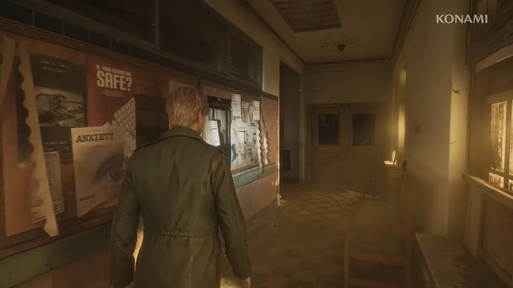

Silent Hill 2
Home
History
Gallery
Gallery
Images and compositions inspired by the atmosphere of the game.
Street shrouded in fog
Toluca lake

Hospital Brookhaven
External links
Related videos
Encyclopedic entry